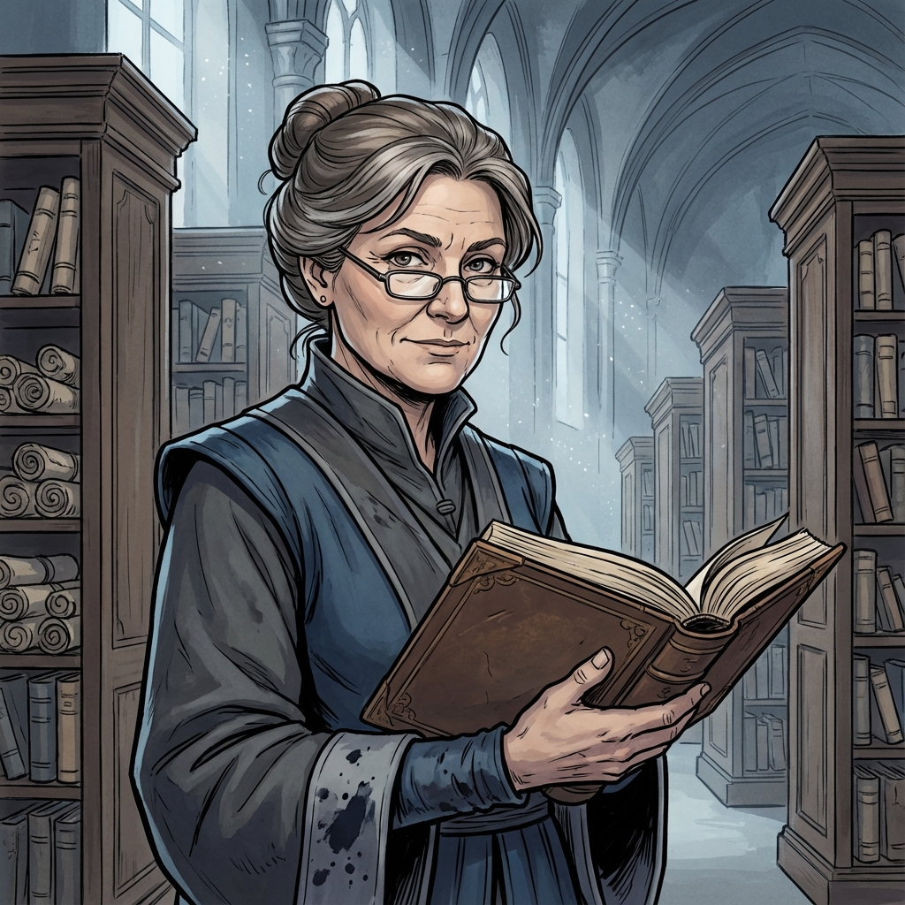

Marge
Head Librarian of the Grand Library
Race: Human
Age: Middle-aged (40s-50s)
Background
Marge has served as Head Librarian of Everpeak's Grand Library for decades. She is the foremost expert on the citadel's incomplete historical records and has dedicated her life to preserving what knowledge remains of the high elves and their vanishing. Marge mentors young scholars like Apocalypse Winter and helps guide those seeking to understand the Dawn's Crown alignment and the citadel's elemental essences. Despite the gaps in the archives, she maintains hope that the right people asking the right questions might piece together the truth.
Personality
Kindly, scholarly, precise, and protective of knowledge. Serious about preserving books and information. Warm and reassuring toward genuine seekers of knowledge. Can become flustered if books are handled carelessly and will politely scold those who damage tomes. Always eager to share what she knows and help others learn. Patient teacher with a remarkable memory for page numbers and references.
Physical Appearance
Middle-aged human woman wearing modest robes stained with ink. Gray-streaked brown hair in a practical bun. Intelligent brown eyes behind reading spectacles (half-moon style on a chain). Slightly stooped shoulders from years of poring over books. Keeps a quill tucked behind her ear. Ink-stained sleeves from constant note-taking.
Role & Abilities
**Role:** Knowledge keeper, mentor, research expert
**Known Information:**
- Crystal lenses related to observatory and orrery are missing
- High elves vanished a century ago after a great sacrifice
- Archives are incomplete; Dawn's Crown ritual not fully understood
- References to multiple elemental essences exist in texts
**Skills:**
- Expert researcher and archivist
- Encyclopedic knowledge of library contents
- Can locate obscure references quickly
- Remembers exact page numbers from memory
**Speech Patterns:**
- Warm, reassuring, slightly breathy tone
- Steady, measured, precise speech
- Common phrases: "Certainly", "Fascinating", "Let's see here...", "Let me check my notes..."
- Adjusts spectacles when emphasizing points
- Taps finger when in deep thought
**Known Information:**
- Crystal lenses related to observatory and orrery are missing
- High elves vanished a century ago after a great sacrifice
- Archives are incomplete; Dawn's Crown ritual not fully understood
- References to multiple elemental essences exist in texts
**Skills:**
- Expert researcher and archivist
- Encyclopedic knowledge of library contents
- Can locate obscure references quickly
- Remembers exact page numbers from memory
**Speech Patterns:**
- Warm, reassuring, slightly breathy tone
- Steady, measured, precise speech
- Common phrases: "Certainly", "Fascinating", "Let's see here...", "Let me check my notes..."
- Adjusts spectacles when emphasizing points
- Taps finger when in deep thought
Equipment
- Practical librarian's robes in muted blues and grays
- Half-moon spectacles on chain
- Multiple quills (one behind ear)
- Ink bottles and stained sleeves
- Personal research notes
- Keys to restricted archives
- Half-moon spectacles on chain
- Multiple quills (one behind ear)
- Ink bottles and stained sleeves
- Personal research notes
- Keys to restricted archives